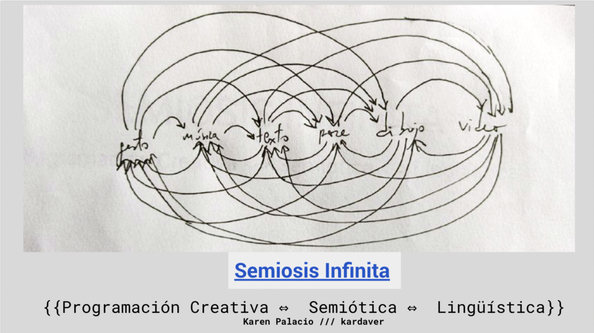

Karen Palacio, Ø
Ver en Español
About
Karen Palacio is a live coder, programmer, and interdisciplinary digital artist from Córdoba Capital, Argentina. She holds a degree in Data Science from FaMAFyC and is studying for a Bachelor's degree in Computer Science at FaMAFyC.
She is the Technical Leader and AI Software Architect of the Artificial Intelligence area at Kunan, a software company in Córdoba.
She researches the development, adaptation, and use of open-source software for performances and installations, aiming to weave complex and multidimensional multimedia texts.
In her artistic productions, she seeks to demonstrate the flexibility of programming as a discursive technique, digitizing and conquering more traditional spaces. She has performed improvisational code for visuals at numerous festivals (such as Cosquín, Mutek, Lollapalooza, Festival De La Salamanca, Festical Latinoamericano de Artes y Tecnologías (Chile), MASS Encuentro(Colombia)); the Metaverse (Decentraland’s MMF); noise meetings (such as Santo Noise, Experimentalia); technology conferences (such as Khipu, WiDS, FITs); museums (such as the Emilio Caraffa Museum, CCEC, CaSO, El Gran Vidrio); and electronic parties - among other places - programming for up to 8 hours straight live. She has showcased her audiovisual work at Tecnópolis, Germany, Chile, Colombia, Venezuela, the Cordoba Art Fair, the MAPA fair, the World Circular Economy Summit, the Cordoba Music Biennial, among other places. She has live coded alongside Horacio Banegas in seven Argentine provinces.
Her work is focused on a feminist vision of technology, considering the role of women as pioneers in the embodied experience of the digital, the algorithmic, and the computational. In her artistic processes, she relates to and develops Free Software, and resemantizes technologies she knows from her work experience as a programmer and SW Architect in the software industry. She collaborates on interdisciplinary projects with performers, sound artists, industrial designers, programmers, etc.
In 2023, she won the Itaú Award 14th edition in the category of Art and Artificial Intelligence with her work "Work." In that same year, she won the "Support for production. MediaLab CCEBA 2023 Contemporary Art: Artistic and technological practices" with her project on relationship with Artificial Intelligence called "Border language: Other infinities in the technical fissures of systems." During 2023, she was selected to participate in the federal program Continuous Present. She is part of the Amplify DAI program of Mutek. In 2024, she won a scholarship to participate in the virtual art residency program "Together Apart: MUTUALISMS" by Proyecto´ace. She lives and works in Córdoba, Argentina.

Latest Courses
Computational Sovereignty and co-creation with Artificial Intelligence
During January 2024, I will be traveling to Concepción, Chile as a guest artist for the Arts and Technologies Festival Toda La Teoría del Universo. Among other activities, I will be teaching a theoretical-practical workshop on relationships with different AI models focused on audiovisual creation, maintaining loops of implementation/reflection. We will attempt to generate a series of intuitions that contextualize the key technologies of the current generative environment of Machine Learning. On a practical level, we will explore different ways of interacting with Machine Learning models, building a prototype with which we will implement/think, stressing how meanings are constructed in techno-artistic texts. Putting marginal notes at the center, together we will reflect on creative and critical exploration - trying to create a network that increases computational sovereignty on this side of the planet and allows us to think beyond the viewpoint of "users". For this, we will be using scientific computing kernels for audiovisual creation with Artificial Intelligence.

Audio-reactive, rhythmic, and synesthetic Livecoding
During November 2023, I traveled to Cali, Colombia, participating in the international meeting of Arts and Digital Cultures MASS. I participated as a guest artist and representative of the Continuous Present program, a national program of artists, scientists, and technologists with a federal character, supported by the Bunge and Borne Foundation, Williams Foundation, and Andreani Foundation. In Cali, I taught the collaboratory: "Audio-reactive and synesthetic live coding."
Live coding of visuals is a technique that mixes programming, improvisation, and rhythm with live audiovisual development. It is a challenge of being in the present and attentive listening that offers surprising visual results.
In this theoretical-practical collaboratory, we introduced ourselves to the open source tool Hydra and my person approach to live coding technique in order to create live visual performances and audio-reactive generative graphics. This experience can help creative individuals of all levels to learn the basics of audio reactivity, audiovision, and synesthetic experiences, and different techniques for the creation of generative art.
The main focus of the collaboratory was to rediscover the visual through listening: based on the concepts of presence and listening, and Deep Listening exercises, facing the act of visual improvisation as a moment where we understand ourselves from our past and what we expect from the future.
Another focus of these sessions was to see how the different components of Hydra - and a little bit of math-magic - allow our animations to maintain a tempo and be transformed by music. We intuitively saw how different visual elements can be modified by different specific musical instruments - even if they are playing at the same time. For this, we gently saw some of the mathematics behind signal analysis. We will try to make this serve as a seed that complicates, feeds, and dialogues with our livecoding production, increasing the potential for collaborative play with other audiovisual and sound producers.
We livecode seeking a good balance between production and reflection. Finally, we concluded the collaboratory with a collective AV improvisation performance - at the closing act of the MASS Encounter.
Enter the event page here
Art and AI: Beyond usage and surfaces
During October, I carried out various actions related to liberating knowledge and setting up mechanisms that allow artists from all over the country to acquire knowledge and computing capacity for deep production with AI. One of those actions was the talk "Practical directions for relationships with AI, to whom it may concern", given by invitation of Bruno Mesz, within the framework of the UNTREF Art and Artificial Intelligence subject. I asked it to be open and recorded to facilitate access to this information.
The construction of meaning in computational art: composition of creative languages
During 2022, I gave three editions of a course on the design, implementation, and critical analysis of programming languages, aimed at artists. In this course, we implemented programming languages from scratch for audiovisual creation. This course is called "The construction of meaning in computational art: composition of creative languages." How can we write programs that interpret other programs? How can we build meaning in the production of a work that interacts intimately with the computational medium? When does a program "become" art? 
Enter the course page here
Proyectos seleccionados
Bitácora de Proceso: Miel de purga
En esta página dejé registrado en formato bitácora los procesos creativos de Miel de Purga. Miel de Purga es una experiencia interdisciplinar que se produjo e inauguró en el marco del MASS Encuentro. Es atravesada por el arte sonoro, la performance, la programación creativa, la danza, el live coding de visuales, la coreografía y la política arraigada geográficamente sobre el estallido de Cali del 2021. Formé parte de esta colaboración gracias a la voluntad de cocreación de Beatriz Sterling, Mario Ortiz y Javier Blanco. Esta bitácora contiene fotos y collages que hice, escritos reflexivos (y otros más técnicos), sonidos, composiciones y videos . Quería que quede registro de algunas metodologías orgánicas de colaboración que fueron surgiendo entre les co-creadores. Además quería que sea bien en primera persona - como cordobesa - argentina, conociendo los sucesos del último estallido en Cali, Colombia y sintiéndome atravesada por los paralelismos con Córdoba/Argentina del pasado y del presente.
Ahora más que nunca lo siento presente - las memorias de los pueblos son músculos que tienen que ejercitarse, y los pueblos del Sur vamos a tener que luchar por nuestra autodefinición eternamente.
Ingresar aquí a la bitácora Miel
Trabajo
"Trabajo" es un ensayo visual sin sonido, explorando las realidades matéricas y asimetrías geopolíticas detrás de la ilusión de digitalización.
Fue exhibido en la Primera Megamuestra de Arte Digital, en Tecnópolis, 2022. Para su realización hice dialogar el entorno de livecoding con Hydra modificado por mí para la incorporación de gráficas precolmbinas, con tecnologías de Inteligencia Artificial para la generación de imágenes a partir de textos en inglés.
En 2023 ganó el Premio Itaú de Artes Visuales Edición 14, en la categoría Arte e Inteligencia Artificial. Fue exhibido en el Museo Emilio Caraffa durante los meses de Julio, Agosto y Septiembre del 2023.
Es parte de una experimentación gráfica más amplia en mi trabajo: ¿cómo hablar de realidades de las cuales no hay registro, o el registro es escaso/en baja calidad, o inaccesible en el internet, debido a asimetrías geopolíticas?
internetSur
"internetSur" es un ensayo visual audiorrítmico, explorando las realidades matéricas y asimetrías geopolíticas detrás de la ilusión de digitalización.
Fue la apertura del Festival de Innovación y Tecnología Social edición 2022. El DJ Octavio Octavio realizó el set que suena. En su realización me relacioné con tecnologías de Inteligencia Artificial para la generación de imágenes a partir de textos en inglés.
Es parte de una experimentación gráfica más amplia en mi trabajo: ¿cómo hablar de realidades de las cuales no hay registro, o el registro es escaso/en baja calidad, o inaccesible en el internet, debido a asimetrías geopolíticas?
Bitácora de exploración: Sinestésica
En esta página dejé registrado en formato bitácora el proceso, resultados intermedios, reflexiones y visualizaciones planteadas a lo hora de hacer idas y vueltas entre la configuración de instrumentos ruidísticos en Bitwig, la escritura de textos que puedan servir como prompts para modelos de generación de imágenes usando Machine Learning, y los resultados visuales del mismo. Desarrollé un primer banco de instrumentos en Bitwig mientras iba escribiendo los textos de prompts para darle a un modelo nuevo de IA que estaba probando. Fui dejándome dibujar hasta llegar a un resultado visual inesperado. Lo tomé como punto de inicio con el cual operar sonido, imaginando los ruidos de la imagen. Luego operando con hydra y editando vídeo llegué a una pieza audiovisual.
Optimizado para desktop.
Ingresar aquí a la bitácora sinestésica
Bitácora de exploración: Machine Learning <=> Sonido
En esta página dejé registrado en formato bitácora exploraciones sonoras, mezclando producción sonora con el software Bitwig e introduciendo a mi práctica modelos basados en difusión para la generación sonora e interpolación de sonidos. Empiezo con dos producciones sonoras propias y termino generando una nueva, usando el resultado de pasarlas por un modelo de inteligencia artificial.
Optimizado para desktop.
Ingresar aquí a la bitácora Machine Learning <=> sonido
Ensayo web: arte digital en el sur global
Siguiendo la idea de site specific, pensé este ensayo web para celular, que sirva para dejar registro de reflexiones acerca de mi práctica como artista digital, comprometida con los problemas geopolíticos de mi aquí y ahora, como artista digital "del interior" de Argentina, Sudamérica.
Optimizado para celular.
Ingresar aquí al ensayo
Sentido
Entorno de dibujo que se desdibuja, explorando ideas base sobre la imagen digital.
Ingresar aquí al entorno de dibujo
Pose Shader
Entorno de dibujo online, que sirve para modificar shaders a través de poses. Utiliza modelos de machine learning para la detección de pose, y escribí shaders específicos para esta página. Es parte de un proyecto más grande que se llama Bitácora de desarrollo, o qué es programar.
Ingresar aquí al entorno
Bitácora de desarrollo, o qué es programar.
Propuesta de instalación presencial, para la interacción reflexiva con un sistema de dibujo gestual de desarrollo propio (pose shader).
Seleccionada para el Laboratorio de Arte y Tecnología por la Municipalidad de Córdoba. Será exhibida en el Cabildo histórico de Córdoba en 2023.
Ingresar aquí a la página de la propuesta
Lenguaje de programación propio: M(é)nad(e)\s
Un lenguaje de programación complejo, pensada como matriz activa: acto de negociación mediante, tal vez dibujar. Exploraciones dentro de programación y dibujado lento.
Ingresar aquí a la página
Lenguaje de programación propio: naive
Un lenguaje para dibujo geométrico y su compilador implementados en javascript. Resultado de simplificar el funcionamiento de los compiladores e implementar las definiciones naivemente - parte del curso Construcción de sentidos en el arte computacional: composición de lenguajes creativos.
Ingresar aquí a la página del lenguaje
Statement
En mi práctica artística investigo y produzco desde una postura crítica, con una metodología que me mantiene en bucles de implementación-reflexión. Entiendo lo que hago como militancia por la libertad del conocimiento, partiendo desde una postura feminista y ecologista de la tecnología.
Como VJ he experimentado el potencial de las visuales: pueden conformar textos complejos, polisémicos, abiertos y dinámicos. Por otro lado, las visuales también pueden ser pancartas electrónicas, o decoración. Las visuales pueden tejer ensayos que establezcan relaciones con la arquitectura e historia de un lugar, y pueden pensarse como montaje en vivo: pueden contrastar, reforzar, modificar, develar, ocultar, denunciar, entre otras operaciones. Por otro lado, las visuales usualmente son pensadas -paradójicamente- para no ser vistas: estímulos con poca información, marcas visuales redundantes y convencionales, pensadas para “no competir” con el resto de lo que sucede en un evento/lugar. En mis búsquedas artísticas intento mostrar el potencial semántico y performático de lo visual para dialogar con lo sonoro, y transformar un evento en algo que construya textos exigentes y multidimensionales.
Constantemente desarrollo y entro en relación con softwares libres como Hydra, openFrameworks, p5js, Blender, lenguajes de programación como python, javascript, rust, haskell y c++, librerías, modelos y arquitecturas de machine learning como NLTK, spaCy, VQGAN+CLIP y Stable Diffusion. Las combino con live coding para poder operarlos en vivo. Entiendo al live coding de visuales como un acto performático de alta exigencia física, mental y emocional, y un ejercicio de presencia y atención. Durante mis performances intento establecer un circuito entre les participantes, les performers sonoros, la situación lumínica del lugar, la arquitectura del lugar físico, la computadora con la cual me estoy comunicando a través de lenguajes de programación, mi cuerpo y los signos gráficos de las visuales. Intento de esta forma establecer conscientemente bucles de co-constitución.